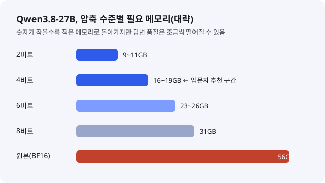
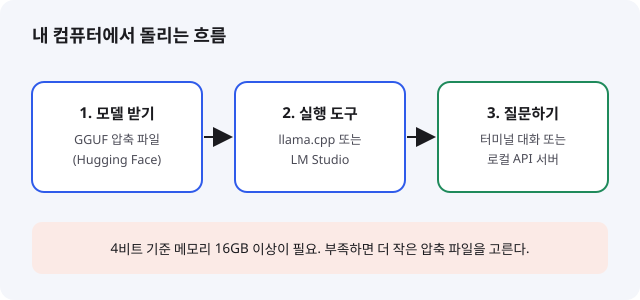

Qwen3.8-27B: 그래픽카드 한 장으로 돌리는 오픈 모델, 입문 개발자가 알아야 할 것
- 알리바바가 공개한 오픈 웨이트 모델 Qwen3.8-27B는 이미지와 영상까지 이해하는 270억 파라미터급 모델이다.
- 압축 파일(4비트 등)로 바꾸면 메모리 16GB 안팎의 일반 그래픽카드나 고사양 노트북에서도 돌릴 수 있고, 라이선스는 Apache 2.0이다.
- 입문 개발자는 클라우드 API 요금 없이 내 컴퓨터에서 AI를 직접 실험해 볼 수 있는 좋은 첫 모델이다.
요즘 개발자 커뮤니티에서는 "클라우드 API 말고 내 PC에서 쓸 만한 모델은 없나?"라는 질문이 자주 나옵니다. Qwen3.8-27B는 그 질문에 가장 가깝게 답하는 모델로 꼽히며, 허깅페이스 트렌딩에도 이 모델을 가볍게 만든 파생 버전들이 줄지어 올라와 있습니다.
01한눈에 보기
모델의 "27B"는 파라미터 270억 개라는 뜻입니다. 파라미터는 모델이 학습하며 익힌 숫자 묶음으로, 사람으로 치면 머릿속 지식의 양에 가깝습니다. 숫자가 클수록 똑똑해지는 경향이 있지만, 그만큼 저장하고 계산하는 데 메모리가 더 듭니다. 그래서 Qwen3.8-27B를 집에서 돌리려면 원본 그대로가 아니라 "압축본"을 씁니다. 사진을 JPG로 줄이는 것과 비슷하게, 숫자의 정밀도를 낮춰 파일을 작게 만드는 방식입니다. 이 과정을 양자화라고 부릅니다.

· 양자화(Quantization): 숫자를 더 적은 비트로 표현해 메모리를 줄이는 기술입니다.
· GGUF: 양자화된 모델을 PC에서 돌리기 쉽게 묶어 둔 파일 형식입니다.
02어떻게 동작하나요
입력은 글뿐 아니라 이미지와 영상도 받을 수 있습니다. 공식 모델 카드는 이를 "이미지와 영상을 이해하는 네이티브 비전-언어 모델"이라고 소개합니다. 내부는 긴 문장을 한 번에 훑는 어텐션 층과 가볍게 기억을 이어 가는 층을 섞은 하이브리드 구조입니다. 덕분에 한 번에 처리할 수 있는 문맥이 262,144 토큰이고, 설정을 바꾸면 최대 100만 토큰까지 늘릴 수 있다고 밝혔습니다. 긴 코드 한 덩어리나 문서 여러 개를 통째로 넣고 질문하는 용도에 유리합니다.

03왜 지금 화제인가요
솔직히 말하면, 오늘 수집 구간(어제 16:30~오늘 16:00 KST) 안에서 이 모델의 새 발표를 찾지는 못했습니다. 공개는 8월 중순입니다. 그럼에도 이 모델을 고른 이유는 두 가지입니다. 첫째, 공식 모델 카드는 8월 13일에 갱신됐고, AMD는 8월 14일 블로그에서 첫날(Day 0) 로컬 실행 지원을 발표했습니다. 둘째, 허깅페이스 트렌딩 목록을 정리한 10월 28일자 모음에는 Qwen3.8 계열의 GGUF 압축판과 파생 모델이 여러 개 올라 있어, 지금도 실험하는 사람이 많다는 신호로 볼 수 있습니다.
04관련 나라·기업
| 구분 | 이름 | 어떤 관련이 있나 |
|---|---|---|
| 나라 | 중국 | 모델을 만든 알리바바의 본사가 있는 나라입니다. |
| 기업 | Alibaba | Qwen 시리즈를 개발해 공식 모델 카드와 가중치를 공개했습니다. |
| 기업 | AMD | 자사 GPU와 AI PC 칩에서 로컬 실행을 공식 지원했습니다. |
| 기업 | Hugging Face | 모델 파일과 공식 카드를 배포하는 플랫폼입니다. |
| 도구 | Unsloth, llama.cpp | 압축본(GGUF)을 만들고, 그 파일을 PC에서 실행하는 도구를 제공합니다. |
05기존 방식과 무엇이 다른가
| 비교 항목 | 클라우드 API 사용 | Qwen3.8-27B 로컬 실행 |
|---|---|---|
| 비용 | 호출한 만큼 요금 청구 | 모델 다운로드 후 추가 API 요금 없음(전기료와 장비 비용은 별도) |
| 데이터 위치 | 외부 서버로 전송 | 내 컴퓨터 안에서만 처리 |
| 필요한 장비 | 인터넷 연결 | 메모리 16GB 안팎 이상(4비트 기준) |
| 최고 성능 | 최상위 상용 모델 수준 | 압축과 장비에 따라 품질과 속도가 달라짐 |
06직접 해 보기
가장 쉬운 길은 LM Studio 같은 GUI 앱에서 모델을 검색해 내려받고 대화창에 질문하는 것입니다. 터미널을 쓰고 싶다면 아래 순서를 따라가면 됩니다. 명령은 Unsloth 공식 문서에 적힌 것을 그대로 옮겼습니다. 먼저 llama.cpp를 빌드합니다. 그래픽카드(NVIDIA)가 있으면 아래 명령을, 맥이나 CPU만 쓴다면 -DGGML_CUDA=OFF로 바꿉니다.
# llama.cpp 빌드 (NVIDIA GPU 기준)
cmake llama.cpp -B llama.cpp/build -DBUILD_SHARED_LIBS=OFF -DGGML_CUDA=ON
cmake --build llama.cpp/build --config Release -j --clean-first --target llama-cli llama-mtmd-cli llama-server llama-gguf-split
# 4비트 압축 모델 내려받기
hf download unsloth/Qwen3.8-27B-GGUF --local-dir unsloth/Qwen3.8-27B-GGUF --include "*UD-Q4_K_XL*"
# 대화 시작 (권장 샘플링 설정 포함)
./llama.cpp/llama-cli --model unsloth/Qwen3.8-27B-GGUF/Qwen3.8-27B-UD-Q4_K_XL.gguf --temp 1.0 --top-p 0.95 --top-k 20 --min-p 0.0처음에는 질문을 짧게 던져 응답 속도를 확인해 보세요. 답이 너무 느리면 더 작은 압축 파일(2~3비트)을 고르면 되지만, 품질이 떨어질 수 있다는 점은 감안해야 합니다.
07주의할 점과 한계
- 벤치마크 점수(예: SWE-bench Pro 61.7, GPQA Diamond 89.2)는 모두 알리바바가 발표한 수치입니다. 제3자가 같은 조건으로 재현한 결과는 아직 확인하지 못했습니다.
- 공식 모델 카드 본문은 270억(27B)이라고 쓰고, 상단 표기는 280억(28B)으로 보입니다. 실제 사용 전에 모델 카드를 한 번 더 확인하세요.
- 4비트 기준으로도 메모리 16~19GB가 필요합니다. 8GB 노트북에서는 2비트 등 더 강하게 압축한 버전만 시도할 수 있고, 품질 저하가 눈에 띌 수 있습니다.
- AMD의 초당 토큰 수는 "예비 측정치"입니다. 장비, 드라이버, 실행 도구 설정에 따라 크게 달라집니다.
- 라이선스는 Apache 2.0이라 상업적 이용이 가능하지만, 파생 모델을 배포할 때는 고지 조건을 확인해야 합니다.
08정리
Qwen3.8-27B는 "내 PC에서 쓸 수 있는 똑똑한 모델"이 어디까지 왔는지 보여 주는 사례입니다. 이미지와 긴 문맥을 다루면서도 압축하면 일반 고사양 PC에서 돌아갑니다. 입문 개발자에게는 API 요금 걱정 없이 프롬프트를 바꿔 보고, 모델이 어떤 조건에서 잘 답하는지 직접 실험해 볼 수 있다는 점이 가장 큰 장점입니다.
다만 벤치마크 숫자를 그대로 믿기보다, 내가 만들 기능에서 실제로 쓸 만한지 작은 예제로 확인하는 습관이 중요합니다. 먼저 LM Studio로 모델을 띄우고, 같은 질문을 클라우드 모델과 비교해 보는 것부터 시작해 보세요.
09참고한 글
- Qwen3.8-27B 공식 모델 카드 (Hugging Face) Hugging Face · 2026.08.13 갱신
- Qwen3.8-27B 로컬 실행 가이드 (Unsloth 문서) Unsloth · 08.19 업데이트 노트
- Run Qwen 3.8 27B on AMD Ryzen AI Max and Radeon (Day 0) AMD 블로그 · 2026.08.14
- Hugging Face Trending Models 2026-10-28 (news-radar) GitHub 이슈 · 생성 10.28 05:15 UTC